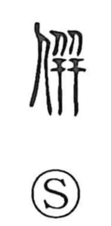

併

Uncategorized
Kun: awaseru, narabu, naraberu, narabini, tomoni | On: hei
to combine ・ to line up ・ to merge ・ together ・ to annex
Explanation
This is a phono-semantic character. Its earliest form was 倂, with 井 serving as the phonetic that points to the on reading hei. The semantic core comes from a base graph that depicts two people standing in a row as seen from the side—the image of a matched pair. This visual idea connects with 竝/並, which shows people lined up left and right. From the sense of pairing and alignment, the character developed meanings such as to line up, to put together, to assemble and arrange, and by extension, together.